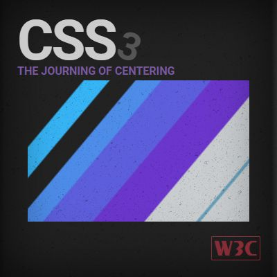

Videos
Dónde encontrar bootdisks e imágenes ISO de MS-DOS y Windows, para instalar un PC retro (por Luiggi Retro PC)
CREAR USB BOOTEABLE (por Oscar Villalta)
Cómo saber si tu disco duro utiliza un formato GPT o MBR (por Zatiel)
FILTRACIÓN DE CÓDIGO FUENTE WinXP (por Windows Desatendido)
Páginas de utilidades
Código ASCii para HTML

Web de Manz sobre CSS3

Fuente: https://lenguajecss.com/css/